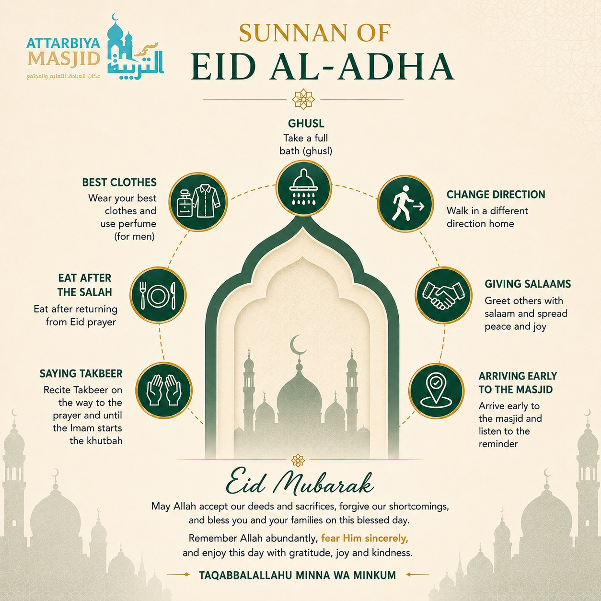
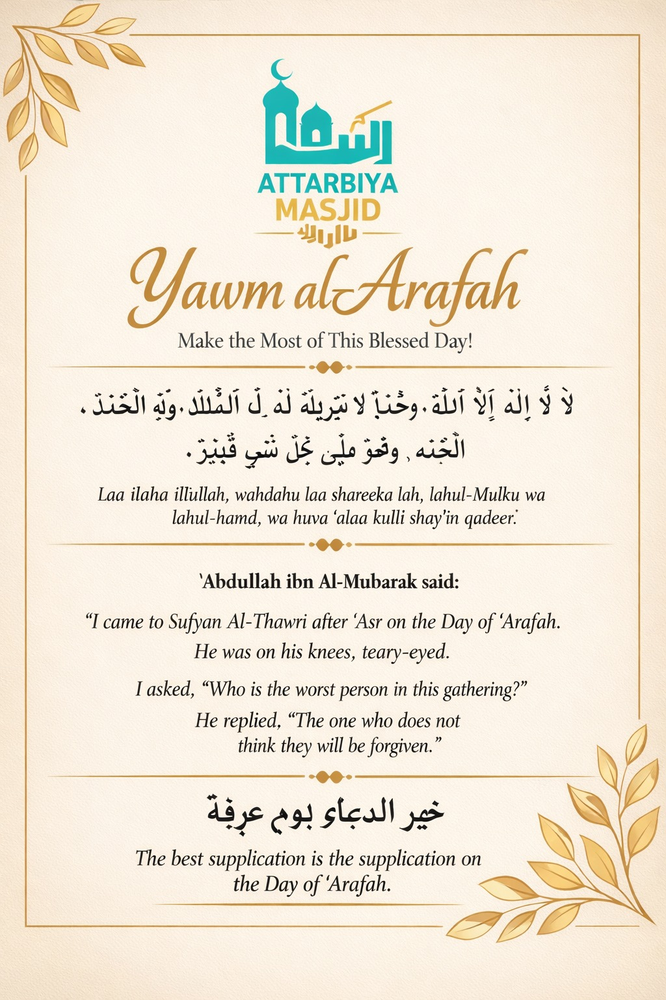
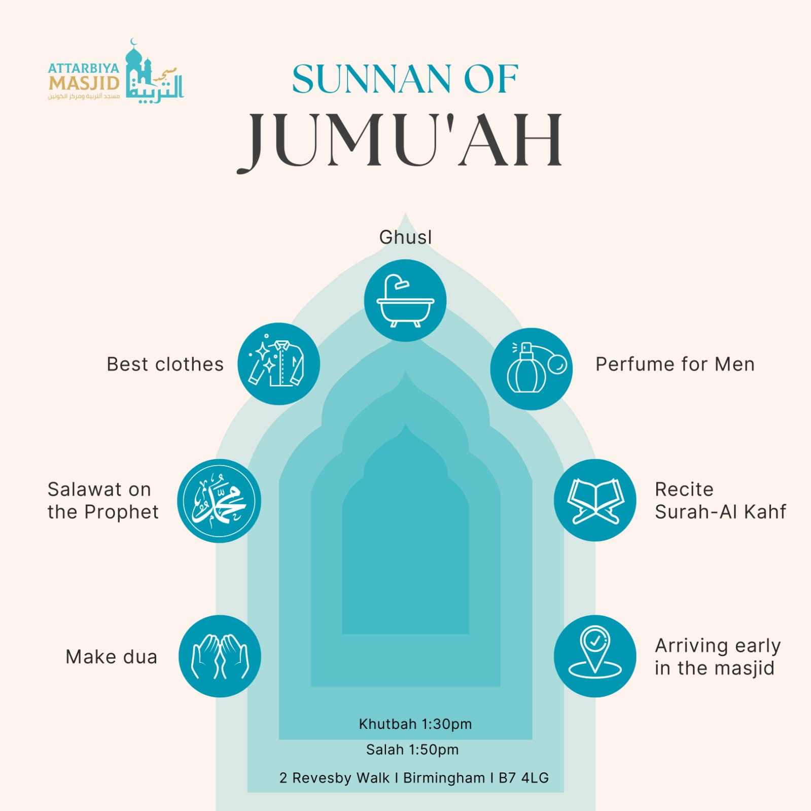
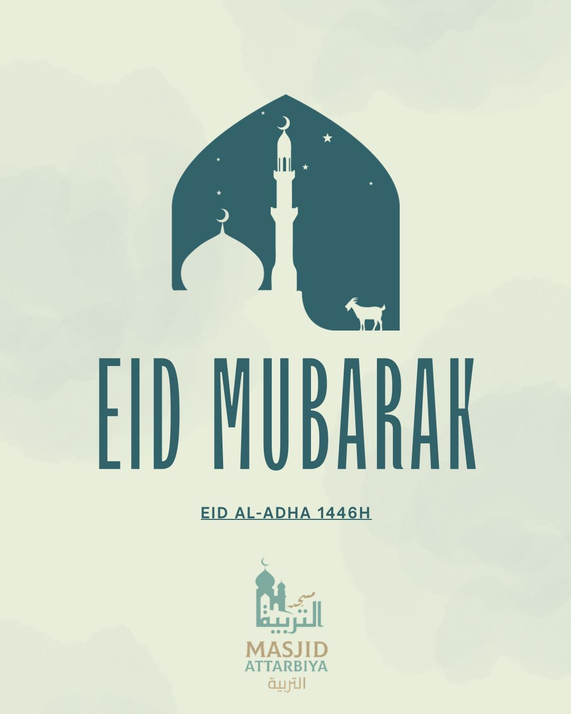
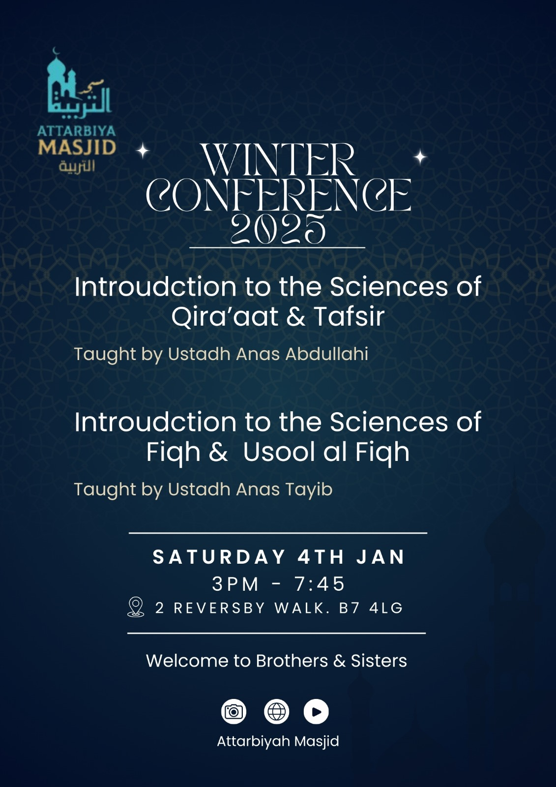
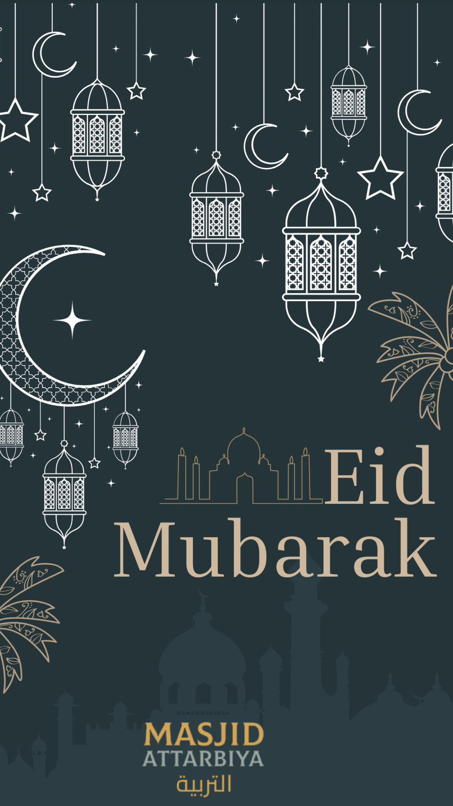
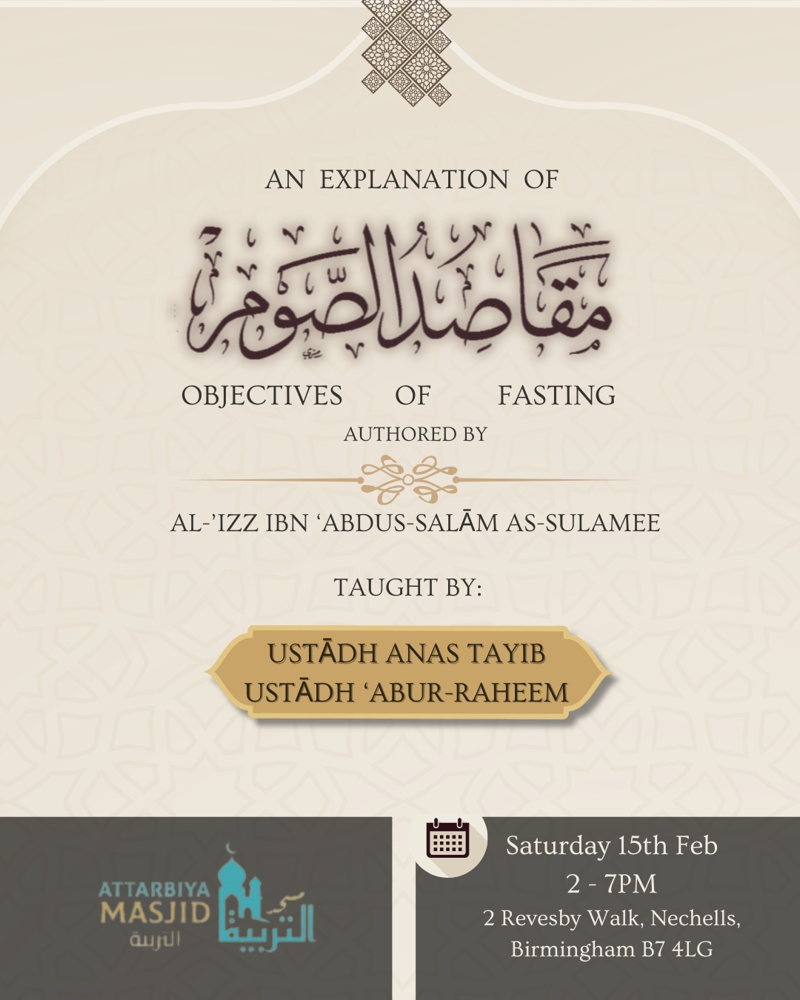
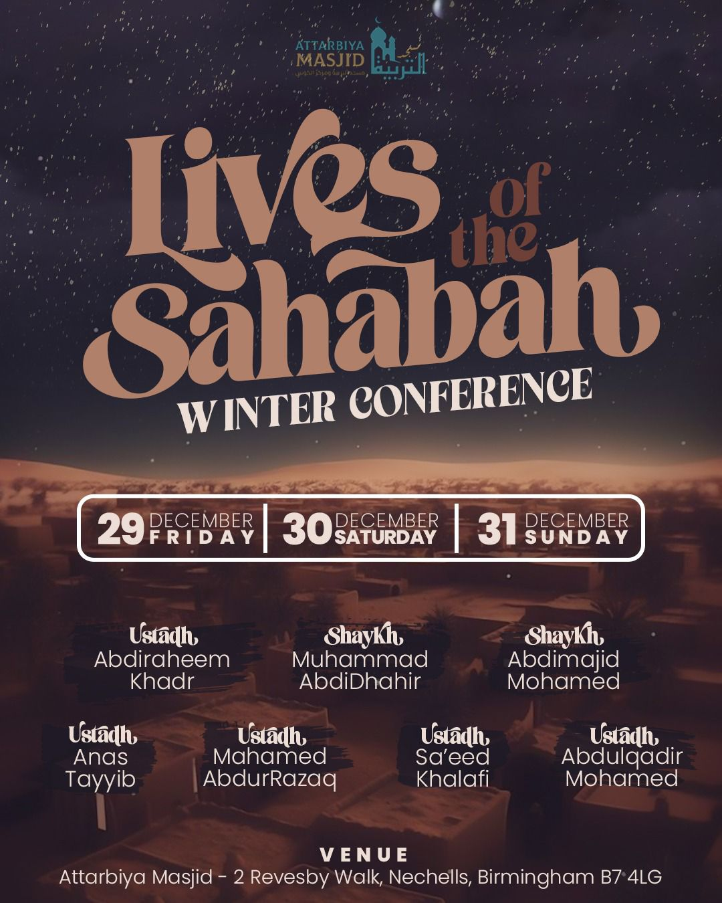
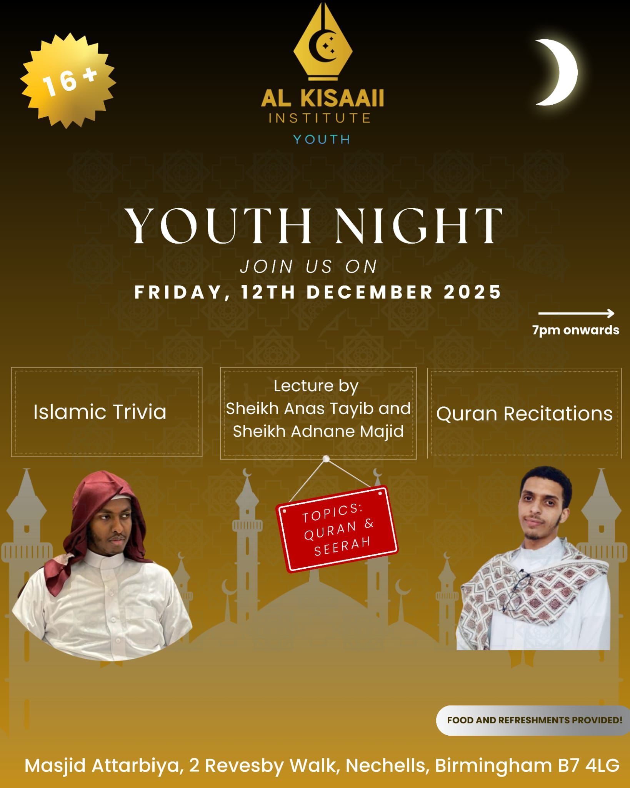
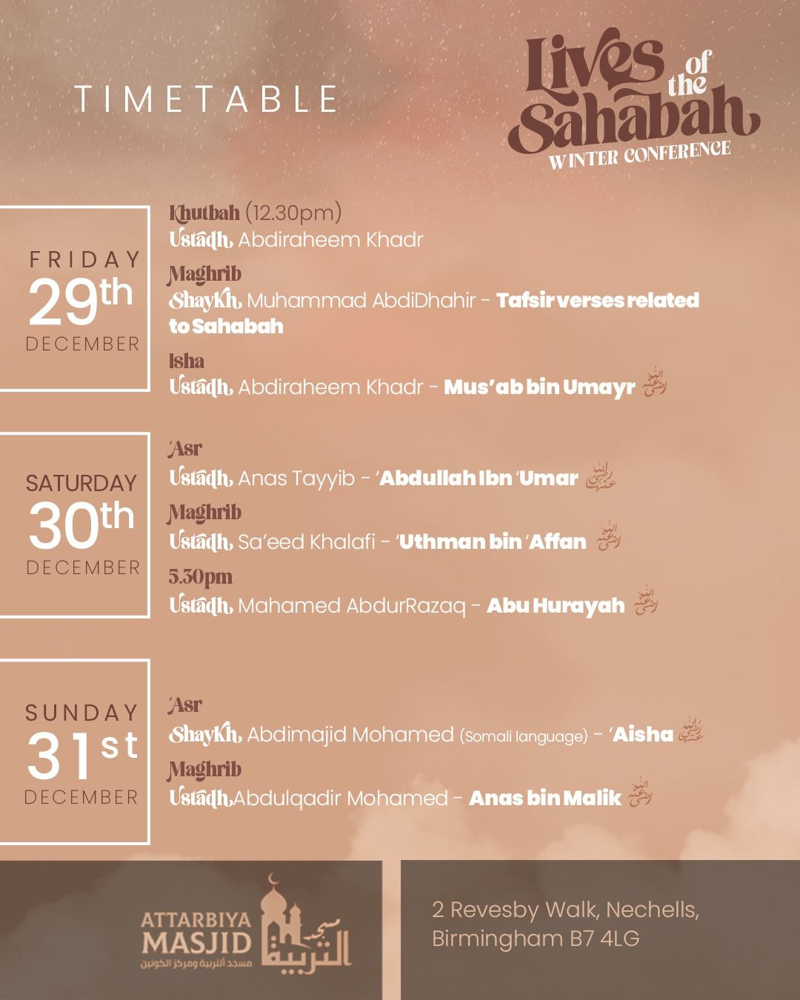

A look back at recent programmes, plus talks and reminders from our YouTube channel.
Highlights pulled from our Instagram page — follow us there for the latest updates.

Fri 29 – Sun 31 December. Talks on the lives of the Sahabah with Ustadh Abdiraheem Khadr, Shaykh Muhammad AbdiDhahir, Shaykh Abdimajid Mohamed, Ustadh Anas Tayyib, Ustadh Mahamed AbdurRazaq, Ustadh Sa'eed Khalafi & Ustadh Abdulqadir Mohamed.

Full schedule: Friday khutbah, Maghrib & Isha talks; Saturday 'Asr, Maghrib & evening talks; Sunday 'Asr & Maghrib talks — covering Mus'ab ibn 'Umayr, 'Abdullah ibn 'Umar, 'Uthman ibn 'Affan, Abu Hurayrah, 'Aisha & Anas ibn Malik (may Allah be pleased with them all).

Sat 4th Jan, 3–7:45pm. Introduction to the Sciences of Qira'aat & Tafsir (Ustadh Anas Abdullahi), and Introduction to the Sciences of Fiqh & Usool al-Fiqh (Ustadh Anas Tayib).

Sat 15th Feb, 2–7pm. An explanation of Maqasid as-Siyam by Al-'Izz ibn 'Abdus-Salam as-Sulamee, taught by Ustadh Anas Tayib & Ustadh 'Abur-Raheem.

Friday 12th December, 7pm onwards. Islamic trivia, a lecture by Sheikh Anas Tayib & Sheikh Adnane Majid on Qur'an & Seerah, and Qur'an recitations. Food and refreshments provided. Ages 16+.

A reminder of the Sunnah practices of Eid al-Adha — ghusl, best clothes, takbeer, arriving early, and giving salaams.

Eid Mubarak from everyone at Attarbiya Masjid.

Eid greetings from everyone at Attarbiya Masjid.

Make the most of this blessed day — the best supplication is the supplication on the Day of 'Arafah.

Ghusl, best clothes, perfume, Salawat, reciting Surah Al-Kahf, and arriving early — Khutbah 1:30pm, Salah 1:50pm.